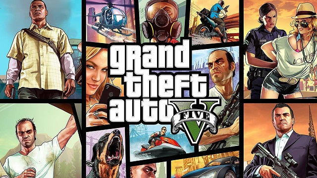
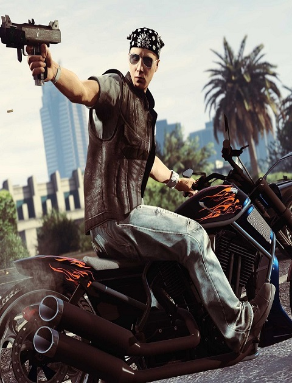
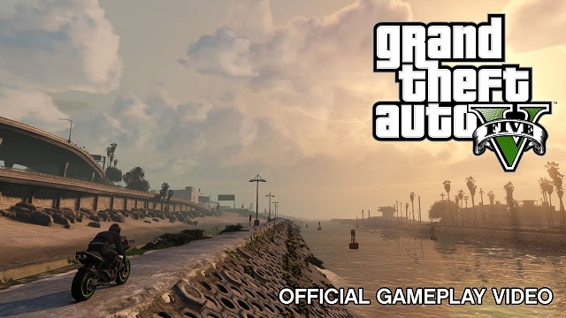

Grand Theft Auto V is a 2013 action-adventure game developed by Rockstar North and published by Rockstar Games. It is the seventh main entry in the Grand Theft Auto series, following 2008's Grand Theft Auto IV, and the fifteenth instalment overall. Set within the fictional state of San Andreas, based on Southern California, the single-player story follows three protagonists—retired bank robber Michael De Santa, street gangster Franklin Clinton, and drug dealer and gunrunner Trevor Philips—and their attempts to commit heists while under pressure from a corrupt government agency and powerful criminals. The open world design lets players freely roam San Andreas' open countryside and the fictional city of Los Santos, based on Los Angeles.
  